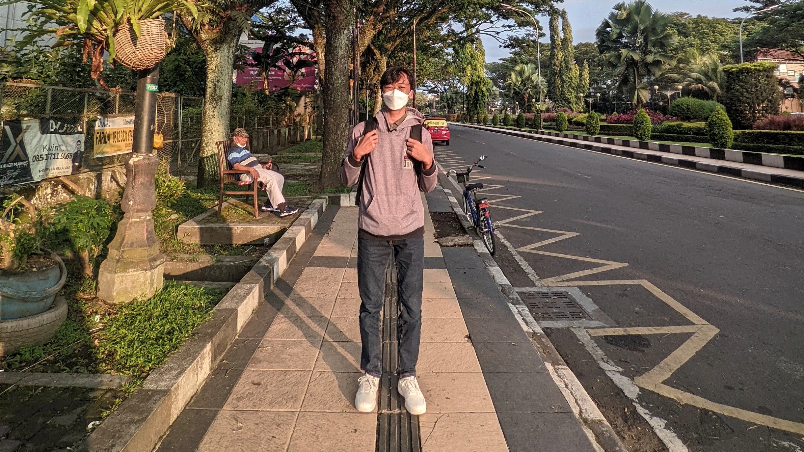

Siapa Aku?

Halo, semuanya! Kenalin, namaku Abimanyu Sri Setyo atau biasa disapa Bima. Aku adalah mahasiswa semester 7 jurusan Teknik Informatika, Universitas Brawijaya.
Ketertarikan
Akhir-akhir ini, aku tertarik untuk belajar lebih banyak tentang Data Science, Machine Learning, hingga Software Engineering dan aku telah menyelesaikan beberapa kursus yang berkaitan dengan bidang yang aku minati.
Ketertarikan

Akhir-akhir ini, aku tertarik untuk belajar lebih banyak tentang Data Science, Machine Learning, hingga Software Engineering dan aku telah menyelesaikan beberapa kursus yang berkaitan dengan bidang yang aku minati. Daftar bidang yang sudah aku pelajari adalah:
- Data Science
- Machine Learning
- Software Engineering
Pengalaman
Beberapa pengalaman yang telah aku ikuti adalah sebagai berikut.
- Menjadi anggota komunitas robotika di kampus.
- Menjadi anggota komunitas Google Developer Student Clubs Universitas Brawijaya.
- Mengikuti program studi independen bersertifikat kampus merdeka